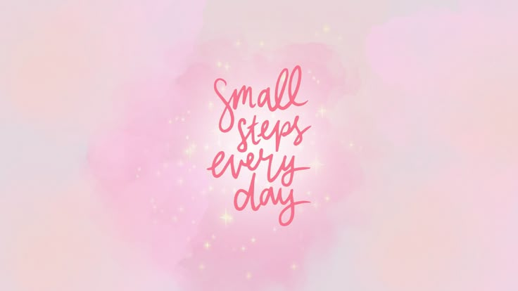

About SoulSync 🌿
SoulSync is your online sanctuary for balance, focus, and inner growth. It’s where spirituality meets ambition — a space that reminds you it’s okay to slow down *and* dream big at the same time.
Our Purpose 🌸
We created SoulSync to help you reconnect with yourself — to feel grounded, inspired, and unshakably confident in your journey. 🌿
Whether you’re chasing career goals, rebuilding your mindset, or simply trying to find peace in a noisy world — this space reminds you that growth isn’t always loud. Sometimes it’s a deep breath, a small step, or a quiet win that no one else sees.
Here, you’ll find the balance between ambition and calm — where motivation feels gentle and healing feels powerful. ✨
Because you don’t have to choose between success and serenity — you deserve both. 🌸

Meet the Creator
Tooba — a dreamer who believes peace and progress can co-exist. She built SoulSync to motivate others to grow from within while building a purposeful life. 💫
What We Offer:
- Daily affirmations to lift your mood
- Motivational content for students & dreamers
- Peaceful soundscapes and reminders
- Guides to stay grounded yet goal-driven
“Balance is not something you find, it’s something you create.” 🌷